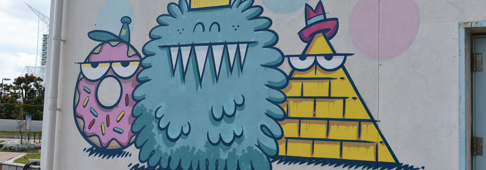

Informations
Montréal, Qc, H1X 2M6
marielee.potvin@gmail.com
(514) 266-1667
Diplômée du Collège LaSalle, DEC Techniques de l'informatique (Programmation jeu vidéo)
Diplômée de l'Université de Montréal, détentrice de deux baccalauréats
Esprit d'analyse développé, soif d'apprentissage, esprit d'équipe et bonne communication

| 2022 |
Collège LaSalle
|
DEC en Techniques de l'informatique (Programmation jeu vidéo) |
| |
| 2017 |
Université de Montréal
|
BAC par cumul englobant : Mineure en Psychologie, certificat en Victimologie et certificat en Criminologie.
|
| |
| 2015 |
Université de Montréal
|
BAC en Anthropologie et Études Est-Asiatique
|
| 2022 |
Bold Spirit Game Studio |
Programmeuse Gameplay |
|
Implémentation de plusieurs mécaniques : Systèmes de portails, automatic vaulting, key remapping, menu gameplay (sensibilité de la caméra, chronomètre, etc.), aim assist, tutoriel pour les différentes actions, etc. Stage s’étant déroulé du mois de mai au mois d’août 2022 (480 heures).
|
| |
| 2019-2022 |
Boutique Point G |
Vendeuse |
|
Aide à la communication entre les employés, la gérante et les propriétaires. Implémente et s'assure du bon suivi des nouvelles politique et directives administratives. S'occupe de l'inventaire et de commander le stock selon les besoins pour le bon fonctionnement de la boutique. En charge des dépôts d'argent et de balancer la caisse. Fourni un excellent service à la clientèle.
|
| |
| 2010-2019 |
Boulangerie le Pain dans les voiles |
Assistante gérante et Chef d'équipe |
|
Gère un groupe d’une vingtaine d’employés. Assure la communication entre les employés de la production/cuisine et ceux de la vente pour les commandes aux particuliers/commerces. Met en place de nouvelles procédures et s’assure de leur suivi. Applique et communique les politiques et directives administratives. S’occupe de la formation des nouveaux employés. Fait l’inventaire des différents produits (ex. sacs pour emballer le pain et les viennoiseries, divers produits ménagers, café en grain, etc.). Contacte les fournisseurs et commande les différents produits manquants. Appelle les différents organismes communautaires pour les dons/collectes des invendus. S’occupe des dépôts d’argent et de balancer les caisses. Fourni un excellent service à la clientèle.
|
| |
| 2009 |
École d'équitation 1101 |
Animatrice |
|
Anime des groupes de 15 à 20 enfants qui sont âgés de 6-7 ans. Enseigne l’équitation durant des cours privés.
|
| Français |
Langue maternelle.
|
| |
| Anglais |
Bonne connaissance. Langue parlée et écrite.
|
| |
| Espagnol |
Connaissance de base.
|
| |
| Japonais |
Connaissance de base. A suivi des cours à l'Université de Montréal ("Élémentaire II").
|
| |
| Informatique |
Maîtrise des logiciels : Visual Studio, Unreal, Unity, Eclipse, Blender, Perforce, Adobe Photoshop, GIMP, Excel, Word, PowerPoint.
Maîtrise des langages : C++, C#, HTML, CSS, JavaScript et MySQL.
|